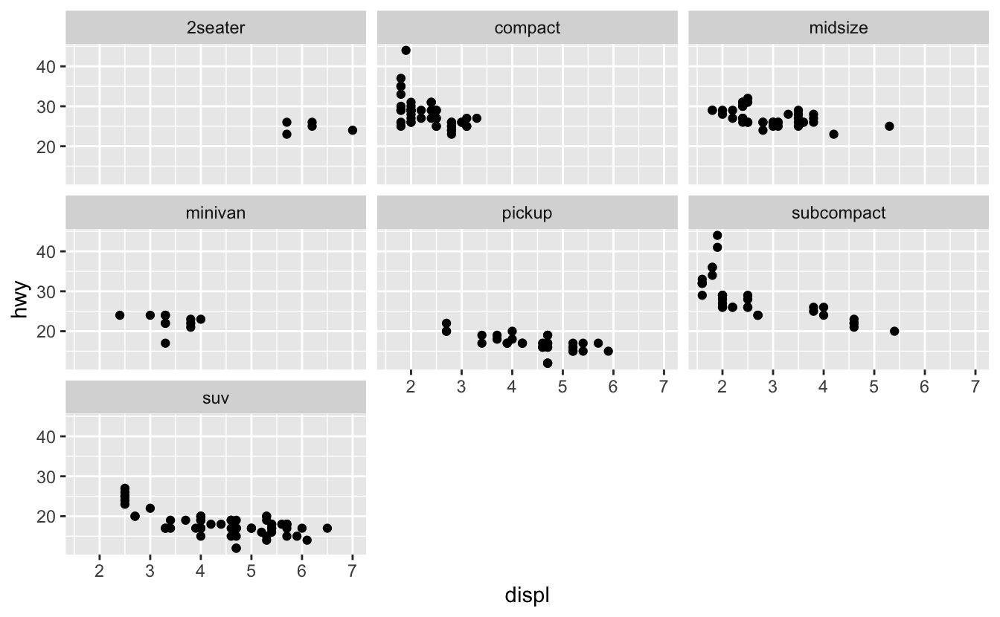
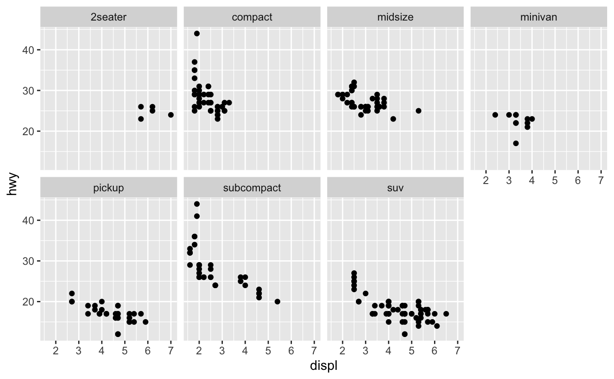
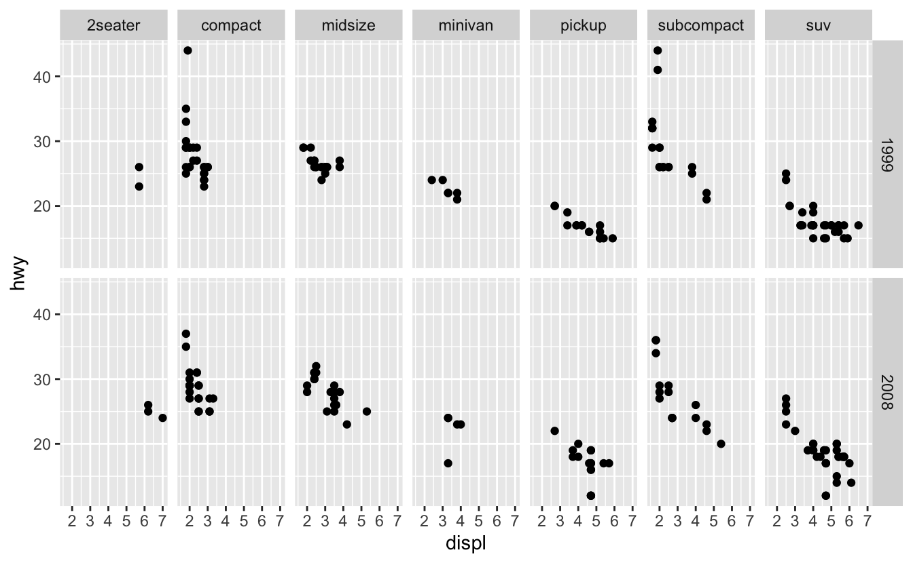

1 ggplot2 basics
The following sections from the data visualization chapter of R for Data Science (R4DS) will introduce you to the basics of plotting with ggplot2.
Clear labelling is crucial when presenting your plots to others. The following section in R4DS introduces you to the labs() function, which allows you to edit the title, subtitle, caption, axes labels, and legend labels of your plots.
ggplot2 and the Tidyverse consist of many functions. Cheat sheets are an excellent resource for understanding the different purposes of the most-used functions and for finding the right ones for a given task. As you learn new functions, it’s a good idea to locate them on the relevant cheat sheet to see how they fit in. This will help you to find them later. The functions covered above can be found on
in the sections
- Basics
- Geoms
- Faceting
- Labels
1.1 Additional information
1.1.1 Pipes and aesthetics
The above sections of R4DS create plots with code that looks like this:
ggplot(data = mpg) +
geom_point(mapping = aes(x = displ, y = hwy))We instead recommend creating this plot with the following code.
mpg %>%
ggplot(mapping = aes(x = displ, y = hwy)) +
geom_point()There are two differences. First, we’ve used %>%, which is called a pipe. The pipe takes the dataset mpg and provides it to the first argument of ggplot(), which is data. The concept of pipes is covered later in R4DS, but is useful enough to introduce here. Pipes make it easier to see which dataset is being plotted. They also allow you to easily manipulate the data before plotting. For example, you might want to apply filter() to the data before plotting.
Second, we’ve moved the aesthetics from geom_point() into ggplot(). In general, your plots will contain more than one geom. We recommend specifying the aesthetics that are shared by all of the plot’s geoms in ggplot() and specifying the aesthetics unique to a single geom in that geom call.
1.1.2 Facet syntax
As you saw in R4DS, you can use facet_grid() and facet_wrap() to split a single plot into many.
mpg %>%
ggplot(mapping = aes(x = displ, y = hwy)) +
geom_point() +
facet_wrap(~ class)
The syntax for facet_grid() and facet_wrap() has been updated, however. Instead of using ~, you specify the faceting variable inside the helper function vars().
For facet_wrap(), all you have to do is replace ~ with vars().
mpg %>%
ggplot(mapping = aes(x = displ, y = hwy)) +
geom_point() +
facet_wrap(vars(class))You still use the nrow and ncol arguments of facet_wrap() to control the number of rows and columns.
mpg %>%
ggplot(mapping = aes(x = displ, y = hwy)) +
geom_point() +
facet_wrap(vars(class), nrow = 2)
facet_grid() now has two arguments,rows and cols, that define the rows and columns of the grid.
mpg %>%
ggplot(mapping = aes(x = displ, y = hwy)) +
geom_point() +
facet_grid(rows = vars(year), cols = vars(class))
Again, you need to wrap the variable names in the helper function vars().
1.1.3 The grammar of graphics
Building a ggplot2 plot is similar to building a sentence with a specified form, like “determiner noun verb” (e.g., “The cat slept.”). Just like each “determiner noun verb” sentence is composed of three parts of speech, each ggplot2 plot is composed of various plot elements. Take a look at the code for the faceted plot that we made above. We specified the following four plot elements to create the plot.
- Data (
mpg) - Geom(s) (
geom_point()) - Aesthetic mappings (
x = displ, y = hwy) - Faceting scheme (
facet_grid())
There are actually four more elements at work in the background. These are:
- Statistical transformation
- Position adjustment
- Coordinate system
- Scales (Wickham 2010)
(Don’t worry too much about these four right now. You’ll learn about them in later chapters.)
To construct a “determiner noun verb” sentence, you choose a determiner, a noun, and a verb. You then slot each word into its respective spot in the sentence. Similarly, to construct a ggplot2 plot, you specify the different plot elements: the data, geom, aesthetic mappings, etc. This idea is called the grammar of graphics, and is incredibly powerful. Just like you can specify any “determiner noun verb” sentence by picking different combinations of determiners, nouns, and verbs, you can specify any plot by picking different combinations of the eight plot elements.
Although each ggplot2 plot contains all of the eight elements, you’ve seen that you won’t always need to specify each of the eight. The following plot only specifies three (data, geom, aesthetic mappings).
mpg %>%
ggplot(mapping = aes(x = displ, y = hwy)) +
geom_point()
ggplot() helpfully takes care of the remaining five elements by using defaults (default coordinate system, scales, faceting scheme, etc.).
There are also a couple of plot elements not technically part of the grammar of graphics. These are:
- Theme
- Labels
You already learned about labels and the labs() function. Themes control components of plots not related to the actually data being plotted, including the appearance of grid lines, the size of the axis labelling text, the background color, the placement of legends, and many other elements.
Each ggplot2 plot comes with a default theme (gray background, white gridlines, etc.). To change these defaults, you adjust the arguments of the theme() function. You don’t need to worry about theme() right now. We’ll talk about using theme() and adjusting different theme elements in subsequent chapters as they become relevant.
We recommend that you construct your ggplot2 plots by using the ordering specified by the following template.
<DATA> %>%
ggplot(mapping = aes(<MAPPINGS>)) +
<GEOMS> +
<FACET_FUNCTION> +
<COORDINATE_FUNCTION> +
<SCALE_FUNCTIONS> +
<GUIDES> +
<THEME> +
<LABELS>As we said earlier, we recommend putting the mappings that are common to all geoms in ggplot() and those unique to a single geom in that geom call. Position adjustments and statistical transformations are usually unique to a geom. When you need to use them, specify them in the geom call. You’ll see an example of a position adjustment in the next chapter.